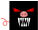
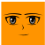
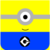

If you see a skin you like, copy the key and paste it into the skin select box.
If you want, you can use an image address online to use a custom skin.

Submitted by Quinn key: pigDevil.png

Submitted by Quinn key: animu.png

Submitted by Quinn key: minion.png